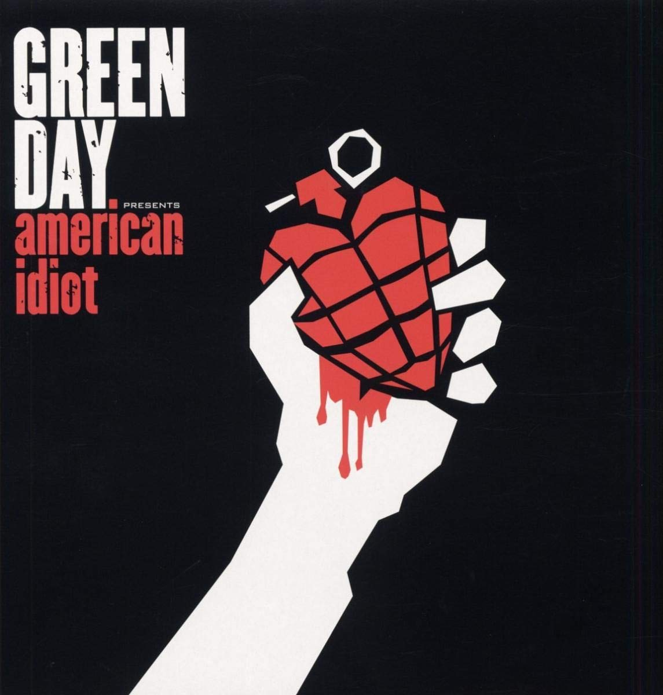
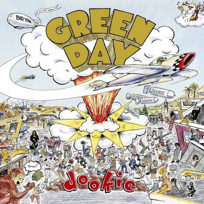

Green Day
Green Day adalah salah satu band punk rock paling berpengaruh di dunia yang dibentuk pada tahun 1987 di California, Amerika Serikat. Band ini terdiri dari Billie Joe Armstrong (vokal dan gitar), Mike Dirnt (bass), dan Tré Cool (drum). Green Day dikenal dengan lagu-lagu yang penuh semangat dan lirik yang tajam, mencakup tema pemberontakan, kritik sosial, dan isu-isu pribadi. Album mereka yang paling ikonik, "Dookie" (1994), membawa mereka ke puncak popularitas dan menjadi salah satu album punk rock terlaris sepanjang masa. Selain itu, album "American Idiot" (2004) memperkuat posisi mereka sebagai band yang tidak hanya populer, tetapi juga relevan secara politis. Dengan gaya khas mereka yang menggabungkan melodi pop dengan energi punk, Green Day telah menginspirasi generasi baru musisi dan penggemar di seluruh dunia. Berikut 2 album yang terkenal :
American Idiot
Dookie
